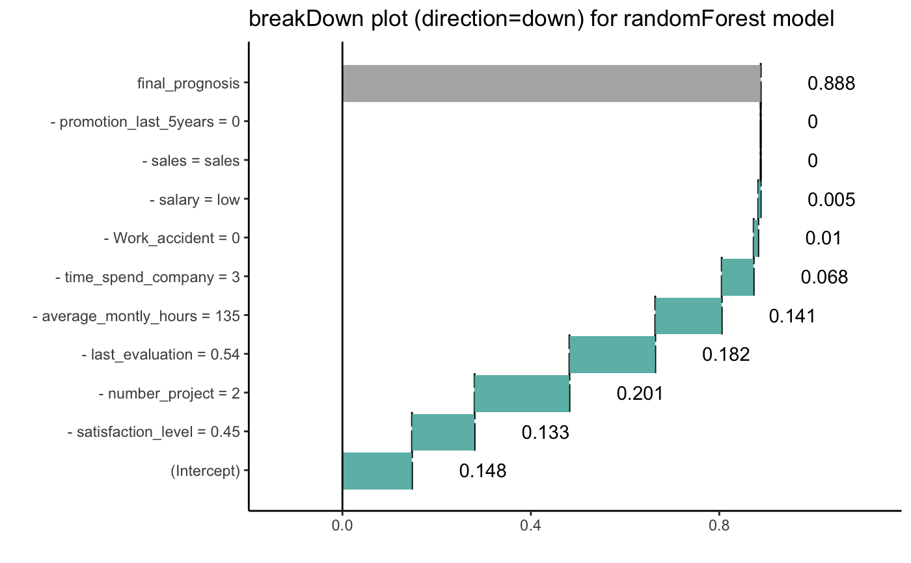
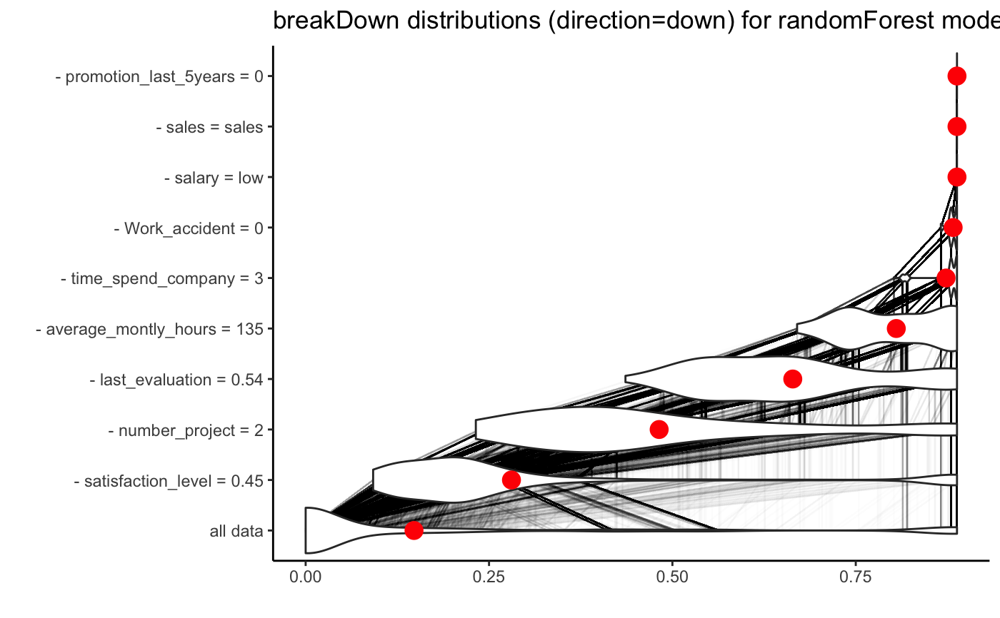
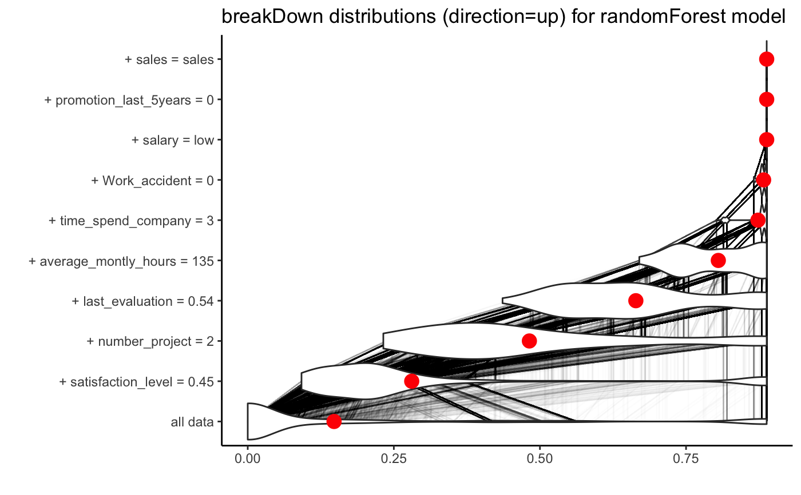
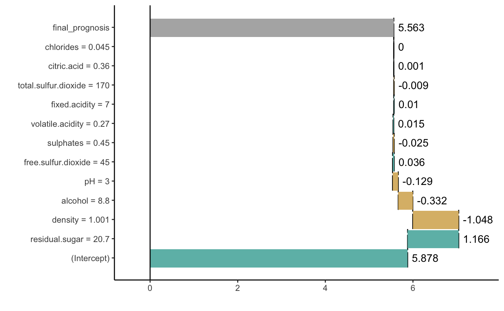
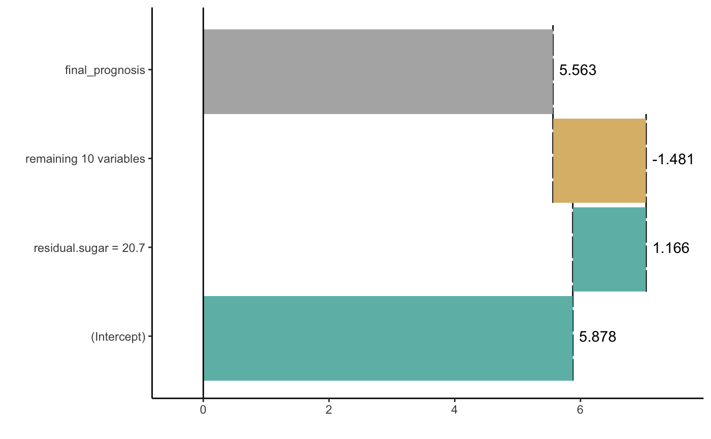
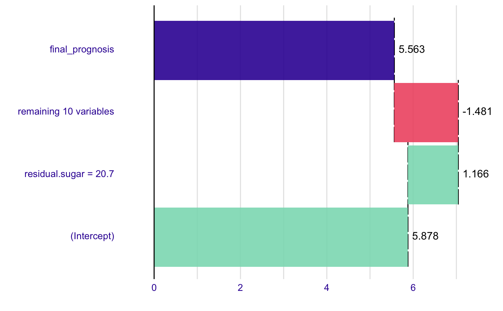

Break Down Plot
Break Down Plot
# S3 method for broken plot(x, trans = I, ..., top_features = 0, min_delta = 0, add_contributions = TRUE, vcolors = c(`-1` = "#f05a71", `0` = "#371ea3", `1` = "#8bdcbe", X = "#371ea3"), digits = 3, rounding_function = round, plot_distributions = FALSE)
Arguments
| x | the model model of 'broken' class |
|---|---|
| trans | transformation that shal be applied to scores |
| ... | other parameters |
| top_features | maximal number of variables from model we want to plot |
| min_delta | minimal stroke value of variables from model we want to plot |
| add_contributions | shall variable contributions to be added on plot? |
| vcolors | named vector with colors |
| digits | number of decimal places (round) or significant digits (signif) to be used.
See the |
| rounding_function | function that is to used for rounding numbers.
It may be |
| plot_distributions | if TRUE then distributions of conditional propotions will be plotted. This requires keep_distributions=TRUE in the broken.default(). |
Value
a ggplot2 object
Examples
library("breakDown") library("randomForest") library("ggplot2") set.seed(1313) model <- randomForest(factor(left)~., data = HR_data, family = "binomial", maxnodes = 5) predict.function <- function(model, new_observation) predict(model, new_observation, type="prob")[,2] predict.function(model, HR_data[11,-7])#> [1] 0.888explain_1 <- broken(model, HR_data[11,-7], data = HR_data[,-7], predict.function = predict.function, direction = "down") explain_1#> contribution #> (Intercept) 0.148 #> - satisfaction_level = 0.45 0.133 #> - number_project = 2 0.201 #> - last_evaluation = 0.54 0.182 #> - average_montly_hours = 135 0.141 #> - time_spend_company = 3 0.068 #> - Work_accident = 0 0.010 #> - salary = low 0.005 #> - sales = sales 0.000 #> - promotion_last_5years = 0 0.000 #> final_prognosis 0.888 #> baseline: 0explain_2 <- broken(model, HR_data[11,-7], data = HR_data[,-7], predict.function = predict.function, direction = "down", keep_distributions = TRUE) plot(explain_2, plot_distributions = TRUE) + ggtitle("breakDown distributions (direction=down) for randomForest model")explain_3 <- broken(model, HR_data[11,-7], data = HR_data[,-7], predict.function = predict.function, direction = "up", keep_distributions = TRUE) plot(explain_3, plot_distributions = TRUE) + ggtitle("breakDown distributions (direction=up) for randomForest model")model <- lm(quality~., data=wine) new_observation <- wine[1,] br <- broken(model, new_observation) plot(br)plot(br, top_features = 2)plot(br, top_features = 2, min_delta = 0.01)